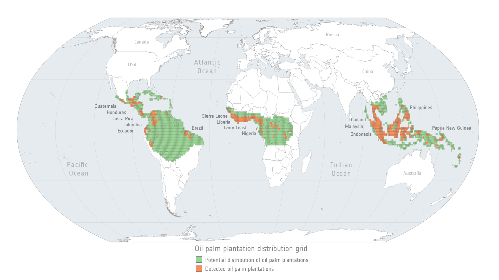
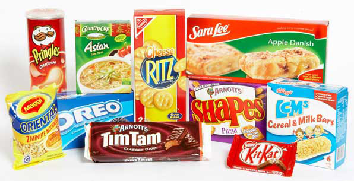
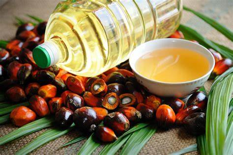
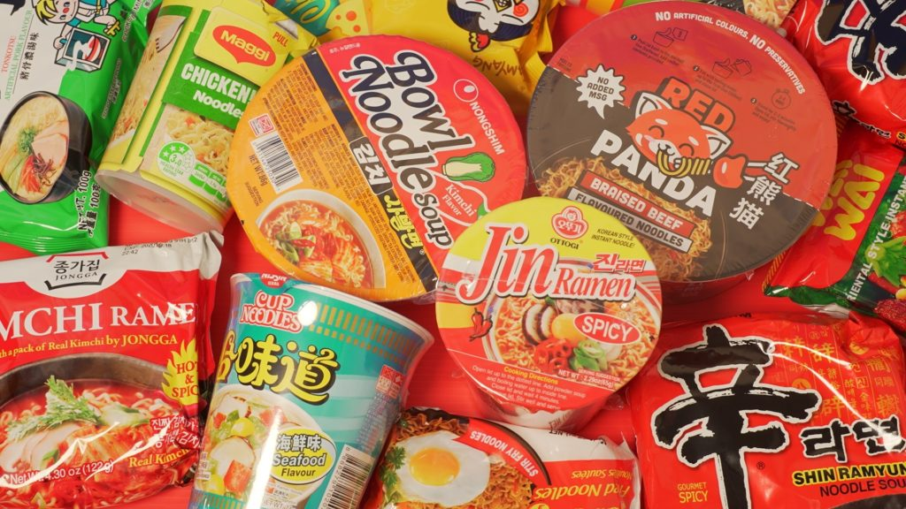
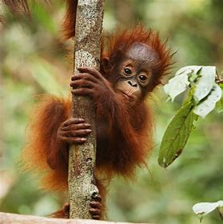

This map shows where the palm oil plantation are. 🌎

As forests shrink, orangutans are forced into smaller areas. This makes it harder for them to find food, which is essential for their survival. 🦧

Palm oil is found in nearly 50% of packaged products, from food to cosmetics, making it challenging to avoid. 🍪

If you wonder how palm oil looks like,it looks like this. Nutella also has palm oil. A lot. 🍫

Instant noodles has the most palmoil. 🍜

Orangutan populations could face a 40–80% decline by 2100. 💀